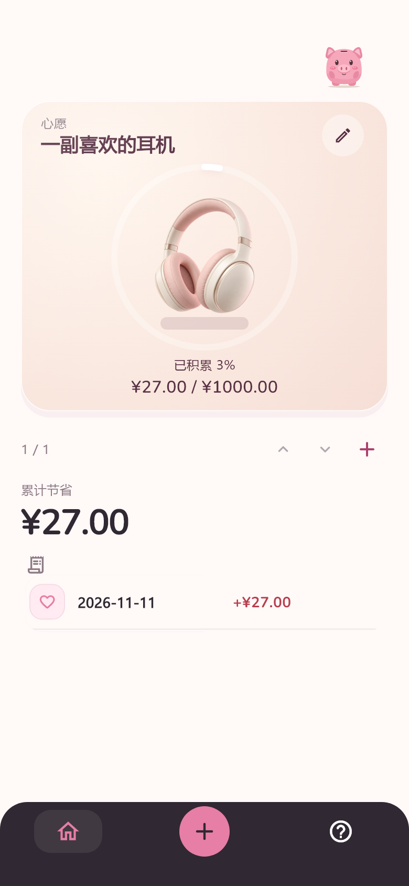
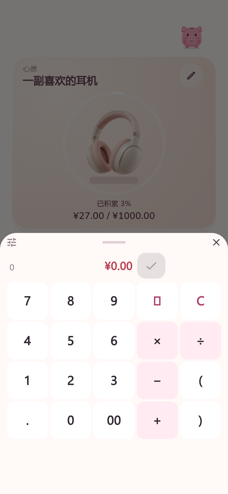
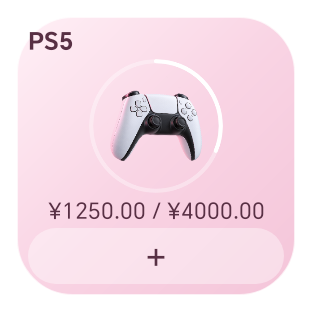

Tap the ＋
Enter what you saved, or calculate it right on the keypad. Add a note or date only if you need one.
A little saved. A little closer.
Wallehog is an offline Android app for recording money you choose to save, tracking your wishes, and getting a little encouragement from your pig.
Free · Android 1.0 · No sign-up

Wallehog · In 42 seconds
See how a choice you record brings a wish a little closer.
A ¥2 saving is recorded against an existing headphone wish. The film shows tapping ＋, entering 2, and confirming. The wish moves from ¥128 / ¥200 (64%) to ¥130 / ¥200 (65%), and the pig responds to the saved record. The ending introduces Wallehog and its Android download. Amounts are illustrative, self-reported savings, not bank deposits. There is music and sound effects, with no spoken dialogue.
42 seconds · Chinese film · Music and sound effects. Press play to start.
Open video file ↗No complete spending history. No complicated budget. Just the choices you want to remember.
Enter what you saved, or calculate it right on the keypad. Add a note or date only if you need one.
Keep several wishes, each with its own progress. Swipe vertically to switch between them, and change a record’s wish when you need to.
Save your record and get a gentle response from your pig. See your progress, then get on with your day.

Just a few seconds
No categories to pick, no need to explain every purchase. Start with the amount; edit or delete it later. Switch between English and Simplified Chinese in the app.
A little space on your home screen
The 2 × 2 Android widget shows your current wish. Tap ＋ to enter and save an amount right there. Create, edit and switch wishes in the app.

Native Android widget · Size varies by launcher
Wallehog is a companion for saving habits. No accounts. No banking connections.
No. It is self-reported savings, not a bank balance, actual deposit or spendable funds. Wish progress is encouragement, not proof that a purchase is affordable.
The current release is an Android app. This is its introduction and download website. No iOS or web app is distributed.
Export a JSON backup from Help on your old device, keep and verify the file, then import it on your new device. There is no account or automatic sync. Back up before uninstalling or clearing app data.
Download the APK from GitHub Releases and follow the Android installation prompts. Most newer Android phones can use ARM64 (23.02 MiB). Choose Universal (57.00 MiB) for ARM/x86_64 or if you are unsure. Both have the same features.
This site has no record entry, analytics scripts, ads, cookies or third-party font requests. GitHub Pages hosts the site, and GitHub logs visitor IP addresses for security. Your app records are not uploaded to this website.
Take Wallehog along. Give those everyday choices a little something to look forward to.
1.0.0 · ARM64 23.02 MiB / Universal 57.00 MiB
Downloads via GitHub Releases. Android may ask you to allow installation from your browser.
Release & checksums ↗